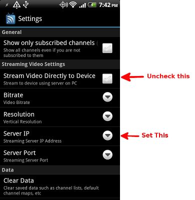

What is it?
HdhomerunStreamServer allows you to stream from a HDhomerun device to an Android device on the same network. HdhomerunStreamServer uses VLC to transcode the video stream which allows you to watch HD channels your Android device.
How to use it?
First you'll need to install VLC on the computer you'll be running HdhomerunStreamServer on. You'll also need to install the Homerun TV app on your android device and connect to the same network as your HDHomerun.
Setup
After opening HdhomerunStreamServer, you'll need to choose a control port and click start. Then in the HomerunTV app you'll need to go to settings and uncheck the "Stream Directly to Device" box.

Next you'll need to set the Server IP Address to the IP Address or hostname of the PC the running HdhomerunStreamServer.
In the settings you can also set the bitrate and resolution you want the video to be streamed in. From there, launch the HomerunTV App and click a channel to start streaming!
Known Issues
Video streaming fails on versions of VLC after 2.0.8
Audio doesn't work with the 32-bit version of VLC on the 64-bit version of Windows. To get streaming to work you'll need to use the 64-bit version of VLC, the 64-bit version of Windows, and the 64-bit version of HdhomerunStreamServer.
Questions
Please post issues and questions to the forum
Source Code
Source code is available on GitHub.